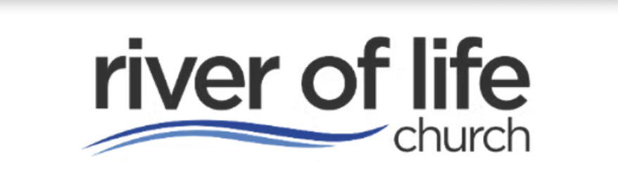

Gospel-Centered
The life, death, and resurrection of Jesus remain at the center of our preaching, worship, discipleship, and mission.


Who we are
We want to plant a church where the gospel shapes what we believe, how we worship, how we live together, and how we engage our community. Our desire is to see people known, equipped, and sent to help others follow Jesus.
The life, death, and resurrection of Jesus remain at the center of our preaching, worship, discipleship, and mission.
We trust the authority and sufficiency of Scripture and want God’s Word to shape everyday life.
We believe lasting spiritual fruit comes from God, so prayer shapes our decisions, relationships, gatherings, and mission.
Discipleship happens through life together. We pursue hospitality, honest relationships, mutual care, and meaningful community.
We equip every believer to live as a missionary in their individual spheres of influence.
We develop disciples who make disciples, leaders who develop leaders, and a church prepared to help plant more churches.
Why Bethlehem
As a Suburb of Albany, Bethlehem gives us a practical and strategic starting point. It is close to Albany, connected to the wider region, and full of people whose lives are shaped by work, family, school, and long commutes.
The area is strong on paper, but many people remain disconnected from a healthy local church. We want to enter with genuine affection, listen well, open our home, and become a faithful presence over time.
Bethlehem gives us a community where we can build relationships, serve our neighbors, and establish a church while remaining closely connected to Albany and the wider Capital Region.
More than 135,500 people live within a fifteen-minute drive, including families, students, professionals, educators, government employees, healthcare workers, and retirees.
Bethlehem provides a strategic place to develop disciples and leaders who can be sent throughout the Capital Region and help establish more healthy churches.
Albany’s influence reaches far beyond the city through state government, universities, healthcare, business, and the people who move throughout the Northeast.
Only about 3% of the Capital Region identifies as evangelical. Many people remain disconnected from a healthy local church and the hope of the gospel.

Every disciple a disciplemaker
Discipleship is more than information or attendance. We want to help people trust Jesus, obey Jesus, become like Jesus, and help others follow Jesus.
Meet the church, build relationships, and begin returning.
Join the church body through membership.
Grow through prayer, Scripture, obedience, and life together.
Help someone else follow Jesus.
Serve, lead, develop others, and pursue calling as God leads.
PARTNER WITH US
We are inviting churches, families, and individual partners to come alongside Go Albany in a meaningful way. This is more than support for a project. It is an opportunity to help establish a healthy church that can serve the Capital Region for years to come, make disciples, develop leaders, and help plant more churches in the future.
Pray for our family, for the people of Albany, and for God to open doors for gospel relationships. Pray that He would form a healthy core team, give wisdom and endurance, and establish a church that makes disciples.
Give financially to help lay the foundation for long-term ministry. Your generosity will help make room for hospitality, community presence, gatherings, and the kind of healthy church life that can endure and multiply.
Consider how you might personally step into the work. Some may help by visiting, serving, sending a team, or exploring whether God may be calling them to be part of the core team in the Capital Region.
Help us build the network of people and churches who can strengthen this work. Share our story, make introductions, and help connect us with partners who may want to pray, give, send, or go.
Invest in the Mission
Your generosity helps establish a gospel-centered church, make disciples, and reach the Capital Region for generations to come.
Give to Go AlbanyTax-deductible giving through Cross Point Fellowship.
For financial accountability, all gifts are administered through Cross Point Fellowship, a 501(c)(3) organization.
CURRENT PARTNERS & ENDORSERS
God has already surrounded this work with churches, ministry leaders, and partners who are praying, encouraging, giving, and helping us prepare for what is ahead. We are deeply grateful for those who have chosen to come alongside Go Albany.
.png)


.jpg)